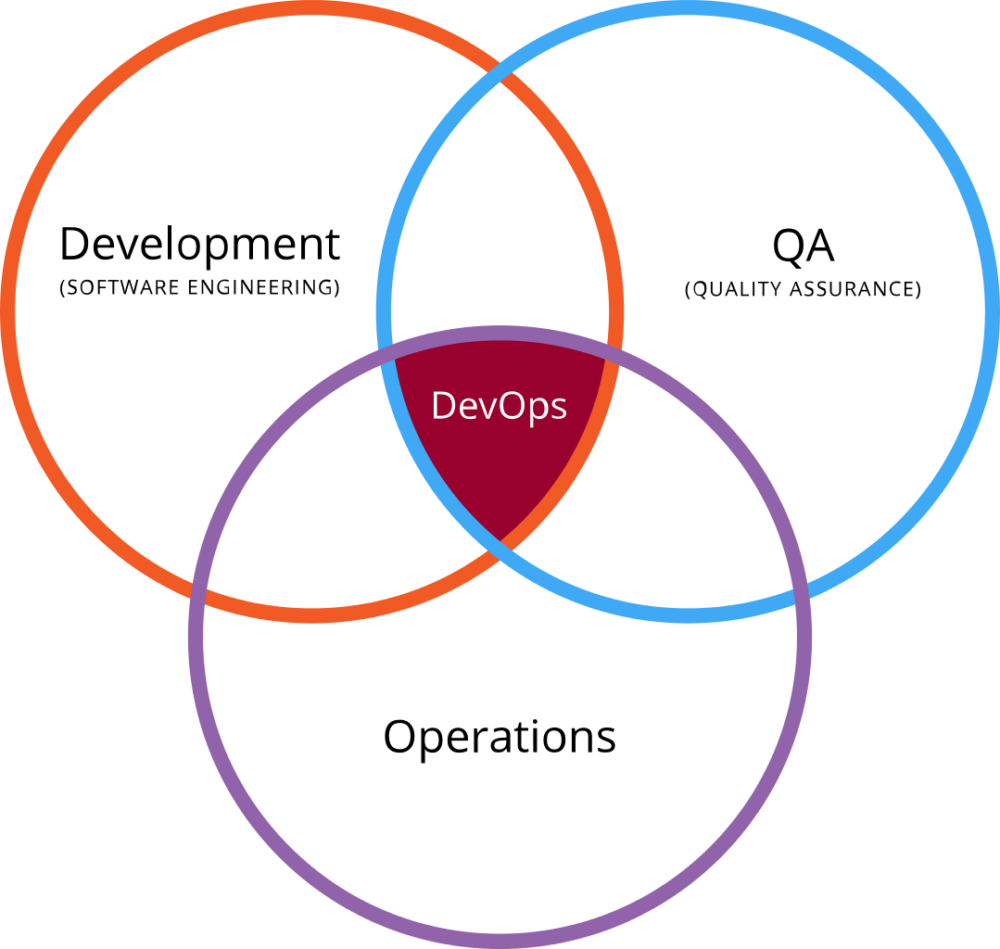

Organizations like Etsy, Netflix, Facebook, Amazon, Twitter and Google are known for their constant innovations and are considered trendsetters in their respective fields. Beyond being a innovative and a fortune 500 company, their drive to be apart and above the competition is on their approach to each challenges they face. Another common thread among them is their DevOps culture, this has something to do with the fact how their every new innovation is reliable, stable, resilient on a massive global level. This whole transformation has to be seen from a distance such as 5 years ago, where every innovation by any organization were too less and too far between each other. DevOps has changed how innovations are developed and deployed, DevOps is for everyone and not just for the big shots.
The competition among the IT industry has resulted in companies emulating other successful companies, resulting in a saturated cycle of similar software cycle and a lack of innovation. This cycle of similitude can be broken with DevOps, a DevOps can turnaround the software development cycle with a multiple team based approach to objective. Hire DevOps Engineers to get the edge of continuous integration, continuous delivery and continuous deployment for your products and services.

What is a DevOps Engineer? Should you hire them?
There’s no formal training or a specific career track for becoming a DevOps engineer. They are often developers who are interested in the deployment and network operations more than the developing process itself, or testers who also have a passion for developing and coding, and move into the management side side where they can improve the planning of test and deployment. Either way, these are professionals who have explored beyond their defined areas of expertise and who have a more bird’s eye view of the software development cycle.
DevOps engineers are an exclusive group, so no surprises that a smaller number of companies have the luxury of having in house DevOps engineers. DevOps engineers are like the Special Task Force(STF) of an organization, They are the perfect combination of years of practical technical prowess and years of hands on experience of the deployment process. DevOps engineers have holistic view of the business analysis part, testing, quality aspects and the pure business side of the whole process.
How our DevOps Engineers helps?
 People skills
People skills
A DevOps engineer is about transforming the functional work experience and the environment between the development and operations teams by breaking down the operational borders. A DevOps engineer is required to be the bridge between the different functional departments and bring different teams together to work towards a shared goal and objective.
People skills are an important contributing factor to the DevOps environment but tend to be ignored due to the mountain of technical prowess a DevOps engineer process. DevOps professionals tend to look to fuse tools and people together rather than people and processes.
DevOps engineers start the transition by understanding the people, the work culture, and how the organization runs. Then a strategy is built that focuses on streamlining the overall operating environment to achieve the goal of continuous delivery. For DevOps consulting firms to be successful and efficient, it needs to include professionals who possess strong people skills. Hiring DevOps Engineers or DevOps outsourcing can turn around how a company addresses and solves its toughest challenges.
Most of the manual tasks performed by the traditional system administrator and software engineers roles which are time-consuming not as reliable as the automated ones can be automated by using languages like Python, Ruby, Bash, Shell, Node.js. This will ensure consistent performance of manual tasks which can be actively monitored 24/7, this allows the teams to spend the saved time on more of the immediate and critical goals of the team and the organization. Hiring DevOps consultants is an advantage as most companies using DevOps engineers has the ability to implement automation technology and tools at any level of the software development process, from the requirements of the clients to development to the testing and operations. Infrastructure needs to be provisioned and configured with code, or you will drown in support. Tools like PowerShell, Chef, and Terraform enable this, allowing infrastructure automation.
Quality automation is driven by testing, so robust testing skills are needed to be a successful DevOps engineer. The idea of automating code for feature deployments can be unsettling to someone who worries the disconnect between the human and product during the testing and quality process. When proper tests are in place, the service and product can rest assured that each function will be tested under every possible scenario, is doing what it was written to do. From all stages of development to deployment a DevOps engineer can run tests to make sure the entire system is stable with new features. Hiring DevOps consultants is always a step forwards in the steps of high quality software and products with a unmatched quality assurance.
DevOps engineers are not typically in fixed roles. They can be software developers, QA and testers, customer support team, project management team, and business leaders. But a DevOps engineer can and should be able to juggle requests from operations, development, and product teams and the ability to empathize, prioritize, and be transparent about these is a key to successful relationships. First and foremost, nothing is more important to a DevOps engineer than delivering valuable product or services to customers. By caring about the outcome of the project or objective takes pole position opposed to their part of the software development cycle.

A DevOps engineer by necessity must be great team players, and help to remove roadblocks by helping coworkers if necessary. A problem with an individual team member is everyone's problem, and a good DevOps engineer always makes sure that a team remains a team until the objective is reached. A DevOps engineer prefers to work in small batches of a large project, so that team members can do their work more easily on small but important milestones, from performing executing codes to code quality tests. The key is to have team identity rather than an individual identity, so working towards to final objective and goal. A DevOps engineer puts the customer requirement and the team ahead of any individual member, and that's why DevOps can be a game changer of the software development cycle.

While combining the development process with the operations is a great way to streamline the deployment process, the faster development cycle means that vulnerabilities are often forgotten or at least security of the product or the service can take a backseat. Therefore, DevOps engineers are usually security conscious programmers, their testing routines are usually is more towards security while not allowing the performance parameters to dip below the expected requirement of the clients. Hiring a DevOps team make sure that the earlier in the journey security is addressed, the cheaper it is to fix problems. The metrics associated with security are of a great concern to a DevOps engineer.
A successful DevOps engineer is all about demands flexibility. This is an opportunity for team members to grow beyond their technical knowledge, and a chance for all the members to lead themselves. Multitasking is a key skill of a DevOps engineer, resource management on an objective-critical situation is a combination of multitasking with flexibility. A DevOps engineer gets requests from many different departments at once and quite frequently, everything and anything seems to be important and urgent at the same time. Hiring a DevOps team makes sure that the quality of the product or service is not compromised in any way.
Most DevOps engineers are excellent software developers, but when they are DevOps engineers they sometimes lack or on purpose of the ability to look at the big picture with respect to developers and the operation teams. Hiring devops experts is good idea as they are a combination of talents and skills of multidisciplinary departments and expectations of the client, a successful DevOps engineers are incredibly practical of the big picture from a third person’s point of view. Hiring devops experts is a right step in making sure the projects and services are viewed from long term transition to better software development cycle.
Choose Storin, your DevOps Partner
As the importance of continuous product delivery is increasing, the demand for DevOps service providers are on a rise. Businesses are looking for top DevOps vendors who can deliver products faster. Here are some of the benefits of a DevOps Services company:
Top DevOps service provider.
Our DevOps team can help increase the value of your business services or products. Our shorter release cycle of products helps us to respond to changes in real time and deliver good user experience. Being one of the top DevOps solutions providers, our team speed up the delivery by identifying and discarding irrelevant and time taking processes.
A Case Study on DevOps: The Transition
Storin DevOps team worked closely with the customer development and deployment team and understand their existing process, prepared DevOps adoption plan, worked with the team to understand the advantages of the transition, given proper training which needed, helped them in moving to the DevOps culture.
Read More...